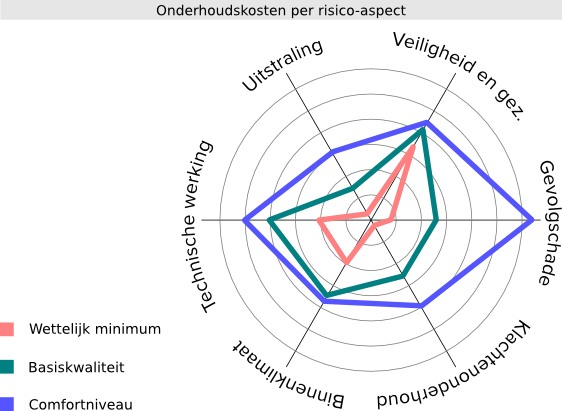
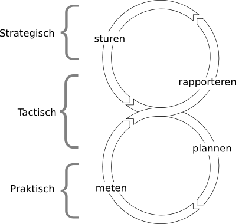

Risico- en conditiegestuurd onderhoud met Stravis
Introductie
Dit artikel is geschreven voor beleidsmakers en technisch vastgoedbeheerders. We bespreken de mogelijkheden die vastgoedbeheerders hebben om onderhoud te sturen op prestaties: hiertoe kunnen conditiescores en (aspect)risico's in beeld gebracht worden en als sturingsinstrument gebruikt worden. Meer specifiek gaan we ook in op de mogelijkheden die Stravis hierin biedt.
De NEN-2767 norm beschrijft de volgende risico aspecten:
- Veiligheid en gezondheid
- Technische werking of bedrijfsproces
- Gevolgschade
- Uitstraling
- Cultuurhistorische waarde
Het is bovendien mogelijk om als organisatie hier zelf aspecten om op te sturen aan toe te voegen.
Sturen
Het onderhoudsbeleid van een organisatie wordt binnen Stravis in een zogenaamd "etiket" vastgelegd. Hierin zijn zowel de beleidsuitgangspunten als de vertaling hiervan naar de onderhoudspraktijk uitgedrukt. Van belang is te weten dat een organisatie met meerdere etiketten naast elkaar kan werken. Daarmee kan binnen het bezit worden gevarieerd of gedifferentieerd.
Het is denkbaar dat de functie, bestemming of levensfase van een complex vraagt om een bepaalde sturing van het onderhoud. Vaak is dit in het complexbeheerplan vastgelegd. Het etiket zorgt ervoor dat de onderhoudsplanning correspondeert met het gewenste onderhoudsniveau voor het complex.
In ieder etiket wordt het beleid vastgelegd in prestatie-eisen, normmaatregelen en onderhoudsintervallen.
prestatie-eisen:
In een prestatie-eis wordt per aspect vastgelegd welk risico maximaal acceptabel is. Bij overschrijding van dit risico is er aanleiding om een maatregel in te plannen. Sturing vindt plaats door te variëren met acceptabele risico's, eventueel op het niveau van individuele bouwdelen.
Bij bezit dat zal worden uitgefaseerd, wordt over het algemeen een groter risico geaccepteerd voor bepaalde aspecten. Hieronder zijn twee indicatieve onderhoudsniveaus uitgewerkt. Van belang is om op te merken dat de sturing per risico plaatsvindt.
| aspect | comfortniveau | uitfaseren |
|---|---|---|
| Veiligheid | 2 | 2 |
| Werking | 3 | 4 |
| Gevolgschade | 3 | 4 |
| Uitstraling | 4 | 6 |
| Cultuurhistorisch | 4 | 6 |
normmaatregelen:
Normmaatregelen vertalen een overschrijding van een prestatie-eis naar de reactie hierop. Afhankelijk van de ernst van de overschrijding en de beleidsuitgangspunten wordt herstel of vervanging ingepland.
Ook hier kan de beheerder sturen: bij bezit dat zal worden uitgefaseerd zal eerder herstel dan vervanging worden ingepland.
| gebrek | intensi. | omvang | > | maatregel | perc |
|---|---|---|---|---|---|
| Serieus | Hoog | 10%-30% | > | Herstellen | 20% |
| Serieus | Hoog | 30%-70% | > | Herstellen | 50% |
| Serieus | Hoog | 70%-100% | > | Vervangen | 100% |
onderhoudsintervallen:
Een conditiemeting heeft vooral voorspellende en sturende waarde voor de korte tot eventueel middellange termijn. Voor de langere termijn is het van belang de onderhoudsintervallen vast te leggen: Wat is de schildercyclus voor het binnen- en buitenwerk? Welk percentage houtrotherstel calculeren we in? Wat is de levensduur van de gootbekledingen?
Hierbij is ook sturing mogelijk. Door de cycli op te rekken accepteer je impliciet een lagere kwaliteit. Een andere keuze is tussen frequenter herstellen of periodiek vervangen.
| element | maatregel | cyclus | perc |
|---|---|---|---|
| Buitenschilderwerk | Herschilderen | 6 jr | 100% |
| Buitenschilderwerk | Nw. verfsysteem | 24 jr | 100% |
| Binnenschilderwerk | Herschilderen | 12 jr | 100% |
Meten
Bij het uitvoeren van de conditiemeting worden de aard, omvang en intensiteit van gebreken beoordeeld. De gebreken zijn gekoppeld aan een risicoweging per aspect.
| element | gebrek | omvang | intens. | aspect | score |
|---|---|---|---|---|---|
| Metselwerk | Scheurvorming | 2%-10% | Hoog | 3 | Veiligheid |
| 2 | Werking | ||||
| 3 | Gevolgsch. | ||||
| 2 | Uitstraling | ||||
| 2 | Cultuurhist. |
De conditiemeting is een genormeerde en objectieve methode om de onderhoudsstaat en risico's in beeld te brengen. Als zodanig doet de conditiemeting op zichzelf geen uitspraken over de onderhoudsbehoefte en planning: de beleidsuitgangspunten (etiketten) zijn hierin in combinatie met de conditiemeting leidend.
Plannen
Op basis van de beschikbare gegevens per complex, de uitgevoerde conditiemeting en het etiket kan Stravis op basis van zijn rekenkern één of meerdere scenario's genereren.
rekenkern:
De rekenkern bepaald op basis van eerder gemaakte instellingen voor ieder element of er sprake is van overschrijding van de risico's. Als er geen onmiddellijke overschrijding is, wordt op basis van gebreksontwikkeling voorspeld wanneer er wel sprake is van overschrijding.
De rekenkern stelt een maatregel voor op basis van de omvang en intensiteit van het gebrek en de eerder gemaakte instellingen voor normmaatregelen. De gebruiker kan deze voorgestelde maatregelen vervolgens controleren en aanpassen.
scenario's:
Per complex kunnen meerdere scenario's worden gegenereerd om "wat als?" vragen te beantwoorden:
- Wat zijn de consequenties als we een hoger of lager niveau van onderhoud toepassen?
- Wat gebeurt er als we besluiten te variëren met de exploitatieduur van het complex?
- Wat zijn de gevolgen als we rekening houden met afbouw van maatregelen richting het einde van de levensduur?
Rapporteren
De scenario's leveren een rijkdom aan gegevens op. Na analyse en juiste interpretatie, kunnen deze worden gebruikt om feedback te geven op de gehanteerde instellingen en voor het beleid.
Stravis biedt zelf enkele beperkte tools om resultaten te filteren en analyseren. Omdat alle programmagegevens vanuit een database toegankelijk zijn, is het ook mogelijk om met externe applicaties, zoals Excel, rapportages om maat te maken. Wij kunnen de implementatie hiervan ondersteunen en begeleiden.

Mogelijkheden voor de organisatie
Hierboven hebben we beschreven hoe een organisatie de primaire processen van sturen, meten, plannen en rapporteren kan inrichten en combineren. Met een juist gebruik en inrichting kan Stravis hierin een belangrijke rol spelen. Op deze manier ondersteunt het planmatig onderhoudsproces een lerende organisatie.

In het bijzonder is het mogelijk om een afweging te kunnen maken tussen kosten en risico's. Dit een vraag die steeds vaker aan woningcorporaties gesteld wordt.
Heeft u vragen of wilt u bespreken hoe u hiervan met uw organisatie kunt profiteren, neem dan contact met ons op.